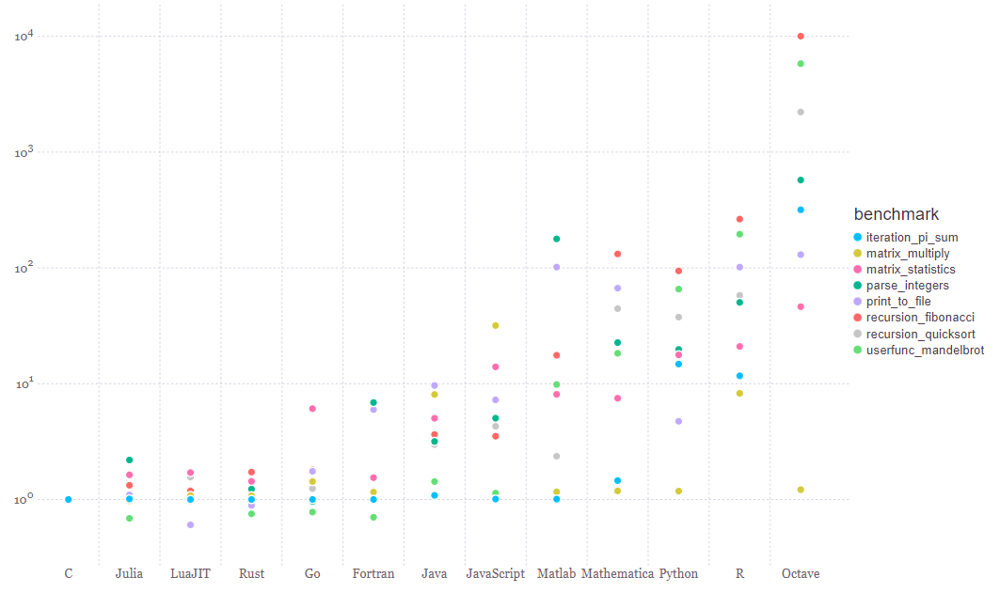
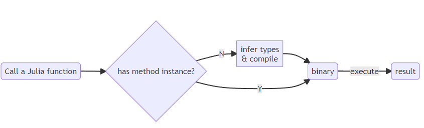

Why Julia?
What is Julia programming language?
Julia is a modern, open-source, high performance programming language for technical computing. It was born in 2012 in MIT, now is maintained by JuliaHub Inc. located in Boston, US.
Unlike MatLab, Julia is open-source. Julia source code is maintained on GitHub repo JuliaLang/julia, and it open-source LICENSE is MIT. Julia packages can be found on JuliaHub, most of them are open-source.
Unlike Python, Julia is designed for high performance (arXiv:1209.5145). It is a dynamic programming language, but it is as fast as C/C++. The following figure shows the computing time of multiple programming languages normalized to C/C++.
Unlike C/C++ and Fortran, Julia is easy to use and is becoming a trend in scientific computing. Julia uses the just-int-time (JIT) technique to achieve high performance, which does not have the problem of platform dependency. Many famous scientists and engineers have switched to Julia from other programming languages.
- Steven G. Johnson, creater of FFTW, switched from C++ to Julia years ago.
- Anders Sandvik, creater of Stochastic Series Expansion (SSE) quantum Monte Carlo method, switched from Fortran to Julia recently.
- Course link: Computational Physics
- Miles Stoudenmire, creater of ITensor, switched from C++ to Julia years ago.
- Jutho Haegeman, Chris Rackauckas and more.
Before switching to Julia, please make sure:
- the problem you are trying to solve runs more than 10min.
- you are not satisfied by any existing tools.
My first program: Factorial
Before we start, please make sure you have the needed packages installed. Type ] in the Julia REPL to enter the package manager, and then type
pkg> add BenchmarkTools, MethodAnalysisGo back to the REPL by pressing Backspace.
julia> function jlfactorial(n)
x = 1
for i in 1:n
x = x * i
end
return x
end
jlfactorial (generic function with 1 method)To make sure the performance is measured correctly, we use the @btime macro in the BenchmarkTools package to measure the performance of the function.
julia> @btime jlfactorial(x) setup=(x=5)
2.208 ns (0 allocations: 0 bytes)
120CPU clock cycle is ~0.3ns, so it takes only a few clock cycles to compute the factorial of 5. Julia is really fast!
Compare with the speed of C program
To measure the performance of the C program, we can utilize the benchmark utilities in Julia. Benchmarking C program with Julia is accurate because Julia has perfect interoperability with C, which allows zero-cost calling of C functions.
In the following example, we first write a C program to calculate the factorial of a number. The file is named demo.c, and the content is as follows:
$ cat demo.c
#include <stddef.h>
int c_factorial(size_t n) {
int s = 1;
for (size_t i=1; i<=n; i++) {
s *= i;
}
return s;
}To execute a C program in Julia, one needs to compile it to a shared library.
$ gcc demo.c -fPIC -O3 -shared -o demo.soTo call the function in Julia, one can use the @ccall macro in the Libdl package (learn more). Please open a Julia REPL and execute the following code:
julia> using Libdl
julia> c_factorial(x) = Libdl.@ccall "./demo.so".c_factorial(x::Csize_t)::IntThe benchmark result is as follows:
julia> using BenchmarkTools
julia> @benchmark c_factorial(5)
BenchmarkTools.Trial: 10000 samples with 1000 evaluations.
Range (min … max): 7.333 ns … 47.375 ns ┊ GC (min … max): 0.00% … 0.00%
Time (median): 7.458 ns ┊ GC (median): 0.00%
Time (mean ± σ): 7.764 ns ± 1.620 ns ┊ GC (mean ± σ): 0.00% ± 0.00%
██▅ ▃▁ ▂▂ ▁▁▁ ▂
███▆▄██▆███▅▅▆▆▆▅▆▅▄▅▆▅▅▇▆▆▄▅▅▇█▇▆▆█████▅▃▁▁▁▁▁▁▁▃▁▁▁▁▁▁▁▃ █
7.33 ns Histogram: log(frequency) by time 12.6 ns <
Memory estimate: 0 bytes, allocs estimate: 0.Although the C program requires the type of variables to be manually declared, its performance is very good. The computing time is only 7.33 ns.
Compare with the speed of Python program
We use the timeit module in ipython to measure the performance of the Python program.
In [5]: def factorial(n):
...: x = 1
...: for i in range(1, n+1):
...: x = x * i
...: return x
...:
In [6]: factorial(5)
Out[6]: 120
In [7]: timeit factorial(5)
144 ns ± 0.379 ns per loop (mean ± std. dev. of 7 runs, 10,000,000 loops each)
In [8]: factorial(100)
Out[8]: 93326215443944152681699238856266700490715968264381621468592963895217599993229915608941463976156518286253697920827223758251185210916864000000000000000000000000One can also use the PyCall package to call the Python function in Julia.
The computing time of the Python program is 144 ns, which is 20 times slower than the C program and 70 times slower than the Julia program. On the other hand, the python program is more flexible since its integer type is not limited by the machine word size.
julia> typemax(Int)
9223372036854775807
julia> jlfactorial(100)
0The reason why python is slow and flexible are the same. In python the type of a variable is not declared when it is defined, and it can be changed at any time. This is why the integer type becomes an arbitrary precision integer type when the number is too large. If a variable does not have a fixed type, the program can not preallocate memory for it due to the lack of size information. Then a dynamic typed language has to use a tuple (type, *data) to represent an object, where type is the type of the object and *data is the pointer to the data. Pointing to a random memory location is slow, because it violates the principle of data locality. Lacking of data locality causes the frequent cache miss - failure to find the data in the L1, L2, or L3 cache. Loading data from the main memory is slow, because of the long latency of reading the main memory.
Combining Python and C/C++?
From the maintainer's perspective, it is hard to maintain a program written in both Python and C/C++:
- It makes the build configuration files complicated.
- Learning two programming languages is hard for new contributors.
Using python as glue is not as powerful as it looks, the following problem can not be solved by this approach:
- Monte Carlo simulation.
- Branching and bound algorithms.
Key ingredients of Julia's performance: Just in time (JIT) compilation
- JIT compilation: compile the method to a method instance when a method is called for the first time;
- Multiple dispatch: invoke the correct method instance according to the type of multiple arguments;

Given a user defined Julia function, the Julia compiler will generate a binary for it at the first called. This binary is called a method instance, and it is generated based on the input types of the function. The method instance is then stored in the method table, and it will be called when the function is called with the same input types. The method instance is generated by the LLVM compiler, and it is optimized for the input types. The method instance is a binary, and it is as fast as a C/C++ program.
Step 1: Infer the types
Knowing the types of the variables is key to generate a fast binary. Given the input types, the Julia compiler can infer the types of the variables in the function.
If all the types are inferred, the function is called type stable. One can use the @code_warntype macro to check if the function is type stable. For example, the jlfactorial function with integer input is type stable:
julia> @code_warntype jlfactorial(10)
MethodInstance for jlfactorial(::Int64)
from jlfactorial(n) @ Main REPL[4]:1
Arguments
#self#::Core.Const(jlfactorial)
n::Int64
Locals
@_3::Union{Nothing, Tuple{Int64, Int64}}
x::Int64
i::Int64
Body::Int64
1 ─ (x = 1)
│ %2 = (1:n)::Core.PartialStruct(UnitRange{Int64}, Any[Core.Const(1), Int64])
│ (@_3 = Base.iterate(%2))
│ %4 = (@_3 === nothing)::Bool
│ %5 = Base.not_int(%4)::Bool
└── goto #4 if not %5
2 ┄ %7 = @_3::Tuple{Int64, Int64}
│ (i = Core.getfield(%7, 1))
│ %9 = Core.getfield(%7, 2)::Int64
│ (x = x * i)
│ (@_3 = Base.iterate(%2, %9))
│ %12 = (@_3 === nothing)::Bool
│ %13 = Base.not_int(%12)::Bool
└── goto #4 if not %13
3 ─ goto #2
4 ┄ return xIf the types are not inferred, the function is called type unstable. For example, the badcode function is type unstable:
julia> badcode(x) = x > 3 ? 1.0 : 3
julia> @code_warntype badcode(4)
MethodInstance for badcode(::Int64)
from badcode(x) @ Main REPL[9]:1
Arguments
#self#::Core.Const(badcode)
x::Int64
Body::Union{Float64, Int64}
1 ─ %1 = (x > 3)::Bool
└── goto #3 if not %1
2 ─ return 1.0
3 ─ return 3In this example, the output type Union{Float64, Int64} means the return type is either Float64 or Int64. The function is type unstable because the return type is not fixed. Type unstable code is slow. In the following example, the badcode function is ~10 times slower than its type stable version stable:
julia> x = rand(1:10, 1000);
julia> @benchmark badcode.($x)
BenchmarkTools.Trial: 10000 samples with 8 evaluations.
Range (min … max): 2.927 μs … 195.198 μs ┊ GC (min … max): 0.00% … 96.52%
Time (median): 3.698 μs ┊ GC (median): 0.00%
Time (mean ± σ): 4.257 μs ± 7.894 μs ┊ GC (mean ± σ): 12.43% ± 6.54%
▁▅█▅▃▂
▁▃▅▇▇▇▅▃▂▂▂▃▄▆▇███████▇▇▅▄▄▃▃▃▃▃▃▂▂▃▂▂▂▂▁▂▂▁▁▁▁▁▁▁▁▁▁▁▁▁▁▁▁ ▃
2.93 μs Histogram: frequency by time 5.44 μs <
Memory estimate: 26.72 KiB, allocs estimate: 696.
julia> stable(x) = x > 3 ? 1.0 : 3.0
stable (generic function with 1 method)
julia> @benchmark stable.($x)
BenchmarkTools.Trial: 10000 samples with 334 evaluations.
Range (min … max): 213.820 ns … 25.350 μs ┊ GC (min … max): 0.00% … 98.02%
Time (median): 662.551 ns ┊ GC (median): 0.00%
Time (mean ± σ): 947.978 ns ± 1.187 μs ┊ GC (mean ± σ): 29.30% ± 21.05%
▂▃▅██▇▅▄▃▂▁ ▂
████████████▇▅▅▄▄▁▁▁▁▁▁▁▁▁▁▁▁▁▃▅▆▇██████▇▇▇▆█▇▇▇▇▇▇▇▇▆▇▆▆▆▇▇ █
214 ns Histogram: log(frequency) by time 6.32 μs <
Memory estimate: 7.94 KiB, allocs estimate: 1.In the above example:
- "
." is the broadcasting operator, it applies the function to each element of the array. - "
$" is the interpolation operator, it is used to interpolate a variable into an expression. In a benchmark, it can be used to avoid the overhead of variable initialization.
Step 2: Generates the LLVM intermediate representation
LLVM is a set of compiler and toolchain technologies that can be used to develop a front end for any programming language and a back end for any instruction set architecture. LLVM is the backend of multiple languages, including Julia, Rust, Swift and Kotlin.
In Julia, one can use the @code_llvm macro to show the LLVM intermediate representation of a function.
julia> @code_llvm jlfactorial(10)
or any instruction set architecture. LLVM is the backend of multiple languages, including Julia, Rust, Swift and Kotlin.
; @ /Users/liujinguo/jcode/ModernScientificComputing2024/Lecture2/3.julia.jl#==#d2429055-58e9-4d84-894f-2e639723e078:1 within `jlfactorial`
define i64 @julia_jlfactorial_3677(i64 signext %0) #0 {
top:
; @ /Users/liujinguo/jcode/ModernScientificComputing2024/Lecture2/3.julia.jl#==#d2429055-58e9-4d84-894f-2e639723e078:3 within `jlfactorial`
; ┌ @ range.jl:5 within `Colon`
; │┌ @ range.jl:403 within `UnitRange`
; ││┌ @ range.jl:414 within `unitrange_last`
%1 = call i64 @llvm.smax.i64(i64 %0, i64 0)
; └└└
; ┌ @ range.jl:897 within `iterate`
; │┌ @ range.jl:672 within `isempty`
; ││┌ @ operators.jl:378 within `>`
; │││┌ @ int.jl:83 within `<`
%2 = icmp slt i64 %0, 1
; └└└└
br i1 %2, label %L32, label %L17.preheader
L17.preheader: ; preds = %top
; @ /Users/liujinguo/jcode/ModernScientificComputing2024/Lecture2/3.julia.jl#==#d2429055-58e9-4d84-894f-2e639723e078:5 within `jlfactorial`
%min.iters.check = icmp ult i64 %1, 2
br i1 %min.iters.check, label %scalar.ph, label %vector.ph
vector.ph: ; preds = %L17.preheader
%n.vec = and i64 %1, 9223372036854775806
%ind.end = or i64 %1, 1
br label %vector.body
vector.body: ; preds = %vector.body, %vector.ph
%index = phi i64 [ 0, %vector.ph ], [ %induction12, %vector.body ]
%vec.phi = phi i64 [ 1, %vector.ph ], [ %3, %vector.body ]
%vec.phi11 = phi i64 [ 1, %vector.ph ], [ %4, %vector.body ]
%offset.idx = or i64 %index, 1
%induction12 = add i64 %index, 2
; @ /Users/liujinguo/jcode/ModernScientificComputing2024/Lecture2/3.julia.jl#==#d2429055-58e9-4d84-894f-2e639723e078:4 within `jlfactorial`
; ┌ @ int.jl:88 within `*`
%3 = mul i64 %vec.phi, %offset.idx
%4 = mul i64 %vec.phi11, %induction12
%5 = icmp eq i64 %induction12, %n.vec
br i1 %5, label %middle.block, label %vector.body
middle.block: ; preds = %vector.body
; └
; @ /Users/liujinguo/jcode/ModernScientificComputing2024/Lecture2/3.julia.jl#==#d2429055-58e9-4d84-894f-2e639723e078:5 within `jlfactorial`
%bin.rdx = mul i64 %4, %3
%cmp.n = icmp eq i64 %1, %n.vec
br i1 %cmp.n, label %L32, label %scalar.ph
scalar.ph: ; preds = %middle.block, %L17.preheader
%bc.resume.val = phi i64 [ %ind.end, %middle.block ], [ 1, %L17.preheader ]
%bc.merge.rdx = phi i64 [ %bin.rdx, %middle.block ], [ 1, %L17.preheader ]
br label %L17
L17: ; preds = %L17, %scalar.ph
%value_phi4 = phi i64 [ %7, %L17 ], [ %bc.resume.val, %scalar.ph ]
%value_phi6 = phi i64 [ %6, %L17 ], [ %bc.merge.rdx, %scalar.ph ]
; @ /Users/liujinguo/jcode/ModernScientificComputing2024/Lecture2/3.julia.jl#==#d2429055-58e9-4d84-894f-2e639723e078:4 within `jlfactorial`
; ┌ @ int.jl:88 within `*`
%6 = mul i64 %value_phi6, %value_phi4
; └
; @ /Users/liujinguo/jcode/ModernScientificComputing2024/Lecture2/3.julia.jl#==#d2429055-58e9-4d84-894f-2e639723e078:5 within `jlfactorial`
; ┌ @ range.jl:901 within `iterate`
; │┌ @ promotion.jl:521 within `==`
%.not = icmp eq i64 %value_phi4, %1
; │└
%7 = add nuw i64 %value_phi4, 1
; └
br i1 %.not, label %L32, label %L17
L32: ; preds = %L17, %middle.block, %top
%value_phi10 = phi i64 [ 1, %top ], [ %bin.rdx, %middle.block ], [ %6, %L17 ]
; @ /Users/liujinguo/jcode/ModernScientificComputing2024/Lecture2/3.julia.jl#==#d2429055-58e9-4d84-894f-2e639723e078:6 within `jlfactorial`
ret i64 %value_phi10
}Step 3: Compiles to binary code
The LLVM intermediate representation is then compiled to binary code by the LLVM compiler. The binary code can be printed by the @code_native macro.
julia> @code_native jlfactorial(10)
.section __TEXT,__text,regular,pure_instructions
.build_version macos, 14, 0
.globl _julia_jlfactorial_3726 ; -- Begin function julia_jlfactorial_3726
.p2align 2
_julia_jlfactorial_3726: ; @julia_jlfactorial_3726
; ┌ @ /Users/liujinguo/jcode/ModernScientificComputing2024/Lecture2/3.julia.jl#==#d2429055-58e9-4d84-894f-2e639723e078:1 within `jlfactorial`
; %bb.0: ; %top
; │ @ /Users/liujinguo/jcode/ModernScientificComputing2024/Lecture2/3.julia.jl#==#d2429055-58e9-4d84-894f-2e639723e078:3 within `jlfactorial`
; │┌ @ range.jl:5 within `Colon`
; ││┌ @ range.jl:403 within `UnitRange`
; │││┌ @ range.jl:414 within `unitrange_last`
cmp x0, #0
csel x9, x0, xzr, gt
; │└└└
cmp x0, #1
b.lt LBB0_3
; %bb.1: ; %L17.preheader
; │ @ /Users/liujinguo/jcode/ModernScientificComputing2024/Lecture2/3.julia.jl#==#d2429055-58e9-4d84-894f-2e639723e078:5 within `jlfactorial`
cmp x9, #2
b.hs LBB0_4
; %bb.2:
mov w8, #1
mov w0, #1
b LBB0_7
LBB0_3:
mov w0, #1
; │ @ /Users/liujinguo/jcode/ModernScientificComputing2024/Lecture2/3.julia.jl#==#d2429055-58e9-4d84-894f-2e639723e078:6 within `jlfactorial`
ret
LBB0_4: ; %vector.ph
mov x12, #0
; │ @ /Users/liujinguo/jcode/ModernScientificComputing2024/Lecture2/3.julia.jl#==#d2429055-58e9-4d84-894f-2e639723e078:5 within `jlfactorial`
and x10, x9, #0x7ffffffffffffffe
orr x8, x9, #0x1
mov w11, #1
mov w13, #1
LBB0_5: ; %vector.body
; =>This Inner Loop Header: Depth=1
; │ @ /Users/liujinguo/jcode/ModernScientificComputing2024/Lecture2/3.julia.jl#==#d2429055-58e9-4d84-894f-2e639723e078:4 within `jlfactorial`
; │┌ @ int.jl:88 within `*`
madd x11, x11, x12, x11
; │└
; │ @ /Users/liujinguo/jcode/ModernScientificComputing2024/Lecture2/3.julia.jl#==#d2429055-58e9-4d84-894f-2e639723e078:5 within `jlfactorial`
add x14, x12, #2
; │ @ /Users/liujinguo/jcode/ModernScientificComputing2024/Lecture2/3.julia.jl#==#d2429055-58e9-4d84-894f-2e639723e078:4 within `jlfactorial`
; │┌ @ int.jl:88 within `*`
mul x13, x13, x14
mov x12, x14
cmp x10, x14
b.ne LBB0_5
; %bb.6: ; %middle.block
; │└
; │ @ /Users/liujinguo/jcode/ModernScientificComputing2024/Lecture2/3.julia.jl#==#d2429055-58e9-4d84-894f-2e639723e078:5 within `jlfactorial`
mul x0, x13, x11
cmp x9, x10
b.eq LBB0_9
LBB0_7: ; %L17.preheader15
add x9, x9, #1
LBB0_8: ; %L17
; =>This Inner Loop Header: Depth=1
; │ @ /Users/liujinguo/jcode/ModernScientificComputing2024/Lecture2/3.julia.jl#==#d2429055-58e9-4d84-894f-2e639723e078:4 within `jlfactorial`
; │┌ @ int.jl:88 within `*`
mul x0, x0, x8
; │└
; │ @ /Users/liujinguo/jcode/ModernScientificComputing2024/Lecture2/3.julia.jl#==#d2429055-58e9-4d84-894f-2e639723e078:5 within `jlfactorial`
; │┌ @ range.jl:901 within `iterate`
add x8, x8, #1
; │└
cmp x9, x8
b.ne LBB0_8
LBB0_9: ; %L32
; │ @ /Users/liujinguo/jcode/ModernScientificComputing2024/Lecture2/3.julia.jl#==#d2429055-58e9-4d84-894f-2e639723e078:6 within `jlfactorial`
ret
; └
; -- End function
.subsections_via_symbolsSingle function definition may have multiple method instances.
julia> methods(jlfactorial)
# 1 method for generic function "jlfactorial" from Main:
[1] jlfactorial(n)
@ REPL[4]:1Whenever the function is called with a new input type, the Julia compiler will generate a new method instance for the function. The method instance is then stored in the method table, and can be analyzed by the MethodAnalysis package.
julia> using MethodAnalysis
julia> methodinstances(jlfactorial)
1-element Vector{Core.MethodInstance}:
MethodInstance for jlfactorial(::Int64)
julia> jlfactorial(UInt32(5))
120
julia> methodinstances(jlfactorial)
2-element Vector{Core.MethodInstance}:
MethodInstance for jlfactorial(::Int64)
MethodInstance for jlfactorial(::UInt32)When a function is called with multiple arguments, the Julia compiler will invoke the correct method instance according to the type of the arguments. This is called multiple dispatch.